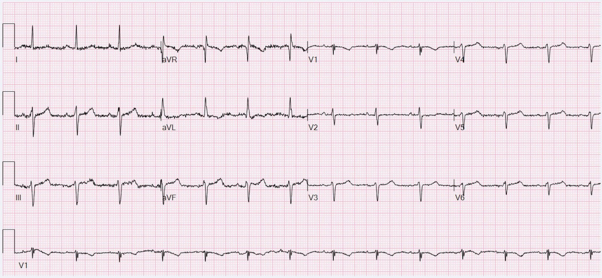
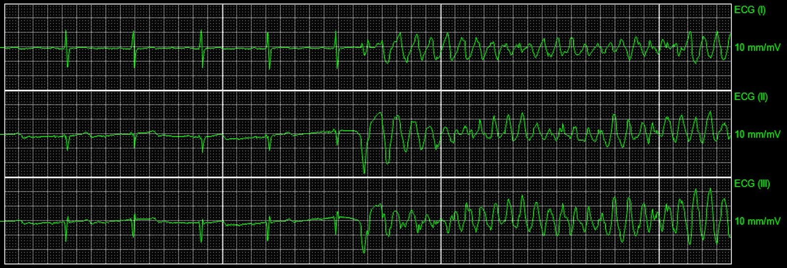
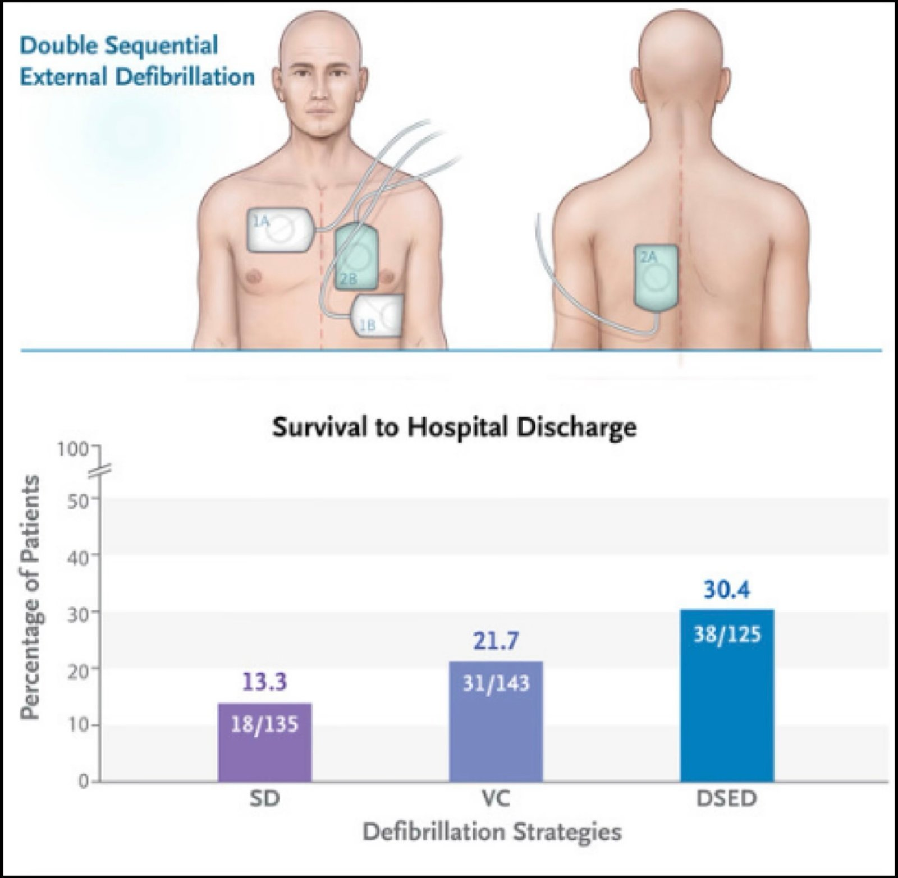
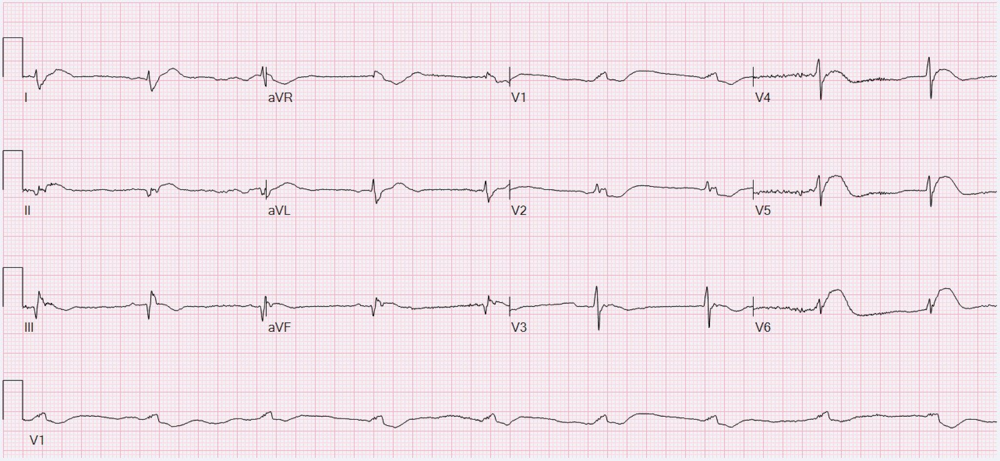
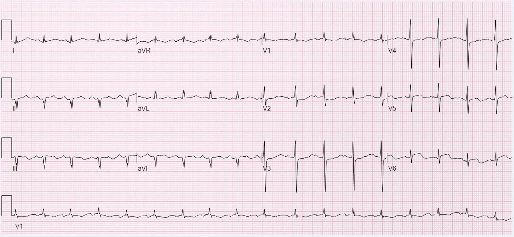
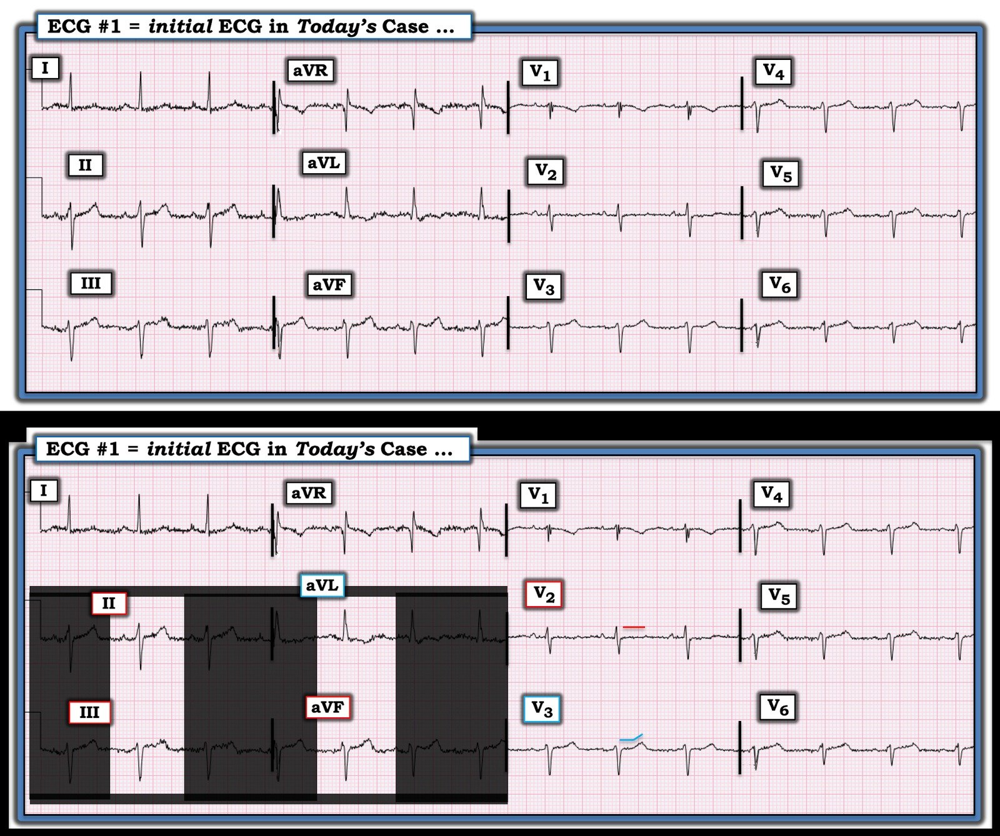

25/03/2025 — Bạn có thể xác định tổn thương thủ phạm trên phim chụp mạch vành mà không dựa vào các dấu hiệu điện tâm đồ không?
Bản dịch tiếng Việt của bài "Can you localize the culprit lesion on angiogram without taking ECG findings into account?" – Dr. Smith’s ECG Blog. Giữ nguyên toàn bộ 7 hình ảnh và 2 video của bản gốc.
Tác giả: Willy Frick
Một phụ nữ ngoài 60 tuổi bị tăng lipid máu rất nặng (LDL >200 mg/dL) đến viện vì đau ngực khởi phát cấp. Triệu chứng bắt đầu khi bà đang xuống xe buýt. Bà mô tả cơn đau ở mức độ vừa, và cho biết cơn đau xuất hiện rồi biến mất vài lần trong vài giờ sau đó trước khi cuối cùng hết hẳn. Vào ngày nhập viện, cơn đau tái phát và rất dữ dội, kèm khó thở và nôn. Vì vậy, xác suất tiền nghiệm của OMI là rất cao. Cao đến mức một điện tâm đồ "nhạt nhẽo" cũng không thể khiến ta yên tâm ngay.
Điện tâm đồ 1


Bạn nghĩ gì?
Theo tôi, điện tâm đồ này chưa có giá trị chẩn đoán. Sóng T ở các chuyển đạo dưới hơi "đầy đặn", nhưng cũng có thể là hình ảnh nền vốn có. Có điện thế thấp ở các chuyển đạo trước tim, điều này luôn khiến việc đọc thiếu máu cục bộ khó hơn. Đoạn ST ở V2-3 có vẻ phẳng một cách kỳ lạ. Nhưng nếu bạn gọi mọi điện tâm đồ trông như thế này là OMI, bạn sẽ có rất nhiều dương tính giả. Tại khoa cấp cứu, bệnh nhân được dán nitroglycerin. Cơn đau không hết, nên bà được dùng thêm một viên nitroglycerin và morphine tĩnh mạch, sau đó hết đau.
Smith: điện tâm đồ này rất đáng nghi OMI thành dưới, nhưng chưa chẩn đoán được 100%. Nó có một số đặc điểm hình thái của LVH, nhưng không có tiêu chuẩn điện thế. Queen of Hearts không chẩn đoán OMI.
Trong ACS, đau ngực là dấu hiệu cảnh báo thiếu máu cục bộ đang diễn ra. Tôi đã từng nói, điều trị cơn đau thắt ngực bằng morphine rồi tiếp tục xử trí không khẩn cấp cũng giống như tháo pin khỏi chiếc máy báo khói đang réo inh ỏi giữa lúc nhà đang cháy rồi quay lại ngủ tiếp.
Smith: Như Willy nói, và như chúng tôi đã nói nhiều lần trước đây, morphine sẽ làm hết đau mà không làm hết thiếu máu cục bộ. Vì vậy, nếu đã dùng thuốc nhóm opioid thì phải mặc định là triệu chứng vẫn còn. CHỈ dùng opioid nếu cơn đau không chịu đựng nổi, hoặc nếu bạn sẽ kích hoạt phòng thông tim ngay khi có bằng chứng khách quan đầu tiên của thiếu máu cục bộ mạch vành.
Không ghi thêm điện tâm đồ nào trong suốt phần còn lại của ngày hôm đó. Troponin I độ nhạy cao (hsTnI) đầu tiên là 745 ng/L.
Smith: Đến thời điểm này, đây là nhồi máu cơ tim cấp với triệu chứng được mặc định là vẫn còn và kháng trị, và cần kích hoạt phòng thông tim.
Ca bệnh tiếp diễn
Tiếc thay, quy tắc đơn giản này đã bị bỏ qua.
Các lần troponin sau đó tăng dần: 588 ng/L, và 4189 ng/L (tham chiếu: < 14 ng/L). Bản ghi sau đây được lấy từ theo dõi từ xa (telemetry) vào khoảng nửa đêm:


Qua xem lại hồ sơ bệnh án, có vẻ rung thất (VF) đã kéo dài 20 phút trước khi được cắt thành công. Hồ sơ ghi nhận bệnh nhân được sốc điện 4 lần (không ghi mức năng lượng) và được dùng amiodarone 300 mg tĩnh mạch và magnesi 2 g tĩnh mạch. Đưa bệnh nhân thoát khỏi VT/VF là ưu tiên số một. Một cú sốc có thể thất bại vì hai lý do, và có thể xử lý bằng hai cách tiếp cận khác nhau:
- Cú sốc cắt được VT/VF, nhưng sau đó nó quay lại ngay lập tức
- Cú sốc không bao giờ cắt được VT/VF, dù chỉ trong một giây
Trong trường hợp thứ nhất, cú sốc đã làm đúng nhiệm vụ nhưng có những yếu tố khác thúc đẩy VT/VF, chẳng hạn thiếu máu cục bộ chưa được tái thông mạch. Trong trường hợp này, bạn có thể dùng thuốc chống loạn nhịp và giải quyết nguyên nhân nền (OMI). Trong trường hợp thứ hai, bệnh nhân không bao giờ chuyển nhịp được, nghĩa là cú sốc hoàn toàn không làm được nhiệm vụ của nó. Trong trường hợp này, bạn nên lấy thêm một máy khử rung thứ hai và thực hiện khử rung ngoài lồng ngực tuần tự kép (double sequential external defibrillation, DSED). Chỉ cần gắn máy khử rung thứ hai như trong sơ đồ dưới đây và phát sốc mức tối đa từ cả hai máy cùng lúc.
Smith: người điều trị thường nghĩ nhịp ở trên là xoắn đỉnh (torsade) (hay VT đa dạng do QT dài). Nhưng xoắn đỉnh và rung thất không thể phân biệt được trên monitor. Chúng chỉ có thể được phân biệt bằng:
1) nếu có mạch, thì đó không phải VF
2) nếu nó tự hết, thì đó không phải VF, trừ một số ngoại lệ hiếm gặp


DOSE VF, New England Journal 2022 (thử nghiệm DOSE VF, tạp chí New England Journal)
Hãy nhớ rằng trong thử nghiệm DOSE VF, việc dùng DSED trước viện đã làm tăng khả năng sống sót đến khi ra viện thêm 17.1% về tuyệt đối! Tức là số bệnh nhân cần điều trị chỉ dưới 6, và nó gần như không tốn kém gì.
Quay lại ca bệnh:
Dưới đây là điện tâm đồ ghi lại sau khi tái lập tuần hoàn tự nhiên (ROSC).
Điện tâm đồ 2


Giờ đây chúng ta có OMI thành dưới, thành sau và thành bên rõ ràng. Bệnh nhân được đưa vào phòng thông tim để chụp mạch vành. Tất cả các phim chụp mạch (và nhiều hơn nữa) đều có trên hướng dẫn chụp mạch nếu bạn muốn đọc chi tiết hơn. Trong bài này, tôi đưa vào phim chụp mạch quan trọng nhất, kèm theo phần giải thích có lời thuyết minh của tôi. Các phim chụp mạch còn lại có ở đây.
Và đây là phần giải thích có lời thuyết minh của tôi:
Bệnh nhân được can thiệp LAD đoạn gần. Không can thiệp LCx. Biên bản ghi rằng có "tắc một nhánh bên nhỏ hơn". Điện tâm đồ ghi lại mười hai giờ sau được trình bày dưới đây.
Điện tâm đồ 3


Điện tâm đồ này cho thấy tắc thành sau-bên vẫn còn. Nhồi máu thành dưới có vẻ gần như đã hoàn tất (sóng Q nổi bật kèm sóng T đảo ngược). Như vậy, có vẻ điện tâm đồ đầu tiên thực sự là OMI thành dưới. Không có bằng chứng tái tưới máu, chỉ có sự tiến triển của ổ nhồi máu không được điều trị. hsTnI liên tiếp bắt đầu từ thời điểm ngừng tim là 9652 ng/L, 12,747 ng/L và 21,112 ng/L. Không xét nghiệm thêm. Siêu âm tim khó thực hiện về mặt kỹ thuật nhưng cho thấy phân suất tống máu bảo tồn và giảm động thành dưới-bên đoạn giữa đến đoạn xa.
Sau đó bệnh nhân vẫn được đặt nội khí quản trong vài ngày. Ngay cả sau khi rút ống, bà vẫn quên các sự kiện dẫn đến nhập viện, nên không rõ bà có còn đau ngực trong lúc đặt nội khí quản sau khi đặt stent LAD hay không. Bà tỉnh táo và làm theo được y lệnh, nhưng không có thêm chi tiết cụ thể nào về khám thần kinh.
Bàn luận:
Ca này rất có thể là một ca nữa về PCI nhầm mạch (wrong vessel PCI). Nhiều ca tương tự đã được đăng trên blog. Tôi đã chia sẻ ca này với một số người, và không ai hoàn toàn chắc chắn mạch nào là thủ phạm.
Tôi nghĩ nhiều khả năng đó là nhánh bờ tù (OM) vì những lý do tôi đã nêu trong video có lời thuyết minh, tuy nhiên cũng đáng tự hỏi liệu một mạch nhỏ như vậy có thể gây ra những thay đổi điện tâm đồ rộng đến thế hay không. Và chắc chắn cũng có khả năng một tổn thương LCx ở đoạn gần hơn đã nứt vỡ và gây thuyên tắc ở đoạn xa. Một số người khác lại lo ngại RCA mới có thể là thủ phạm.
Sự không chắc chắn về mạch thủ phạm là rất thường gặp. Thực tế, trong nghiên cứu tinh tế này của Heitner và cs., các nhà nghiên cứu nhận thấy trong số bệnh nhân được tái thông mạch, 27% chỉ được tái thông các động mạch vành không phải thủ phạm!
Một thử nghiệm năm 2017 mang tên CULPRIT SHOCK cho thấy ở bệnh nhân sốc tim, chiến lược chỉ PCI mạch thủ phạm có liên quan với kết cục tốt hơn so với PCI nhiều mạch ngay lập tức. Sau CULPRIT SHOCK, nhiều người đã né tránh PCI nhiều mạch trong bối cảnh cấp. Tuy nhiên, chúng ta phải nhớ hai điều khi áp dụng bằng chứng này vào thực hành lâm sàng. Thứ nhất, đây là những bệnh nhân bị sốc. Và thứ hai, điều này mặc định là đã xác định rõ được thủ phạm (một tiêu chuẩn chọn vào của thử nghiệm đó). Nhiều bệnh nhân có thể không có thủ phạm rõ ràng.
Các thử nghiệm khác đã tìm thấy lợi ích của việc tái thông các tổn thương không phải thủ phạm khi bệnh nhân nhập viện vì ACS, lớn nhất trong số đó là COMPLETE, và gần đây hơn là MULTISTARS AMI. Dù tôi tin vào kết quả của các thử nghiệm này, tôi luôn thấy khó dung hòa những phát hiện này với kết quả của COURAGE, BARI 2D, ISCHEMIA, REVIVED-BCIS2 — những thử nghiệm cho thấy đặt stent các tổn thương ổn định không làm giảm biến cố tim mạch chính (MACE). Và trong một nghiên cứu như COMPLETE hay MULTISTARS AMI, bạn đặt stent cả mảng xơ vữa nứt vỡ cấp (thủ phạm) lẫn các mảng không nứt vỡ, không phải thủ phạm và do đó về cơ bản là ổn định.
Tóm lại, chúng ta có bằng chứng rằng:
- PCI nhầm mạch là rất thường gặp, có lẽ gần một phần ba số bệnh nhân (Heitner và cs.)
- Đặt stent các tổn thương ổn định ở phần lớn bệnh nhân không làm giảm MACE (COURAGE, BARI 2D, ISCHEMIA, REVIVED-BCIS2)
- Đặt stent mọi tổn thương (ổn định và không ổn định) ở bệnh nhân ACS có làm giảm MACE (COMPLETE, MULTISTARS AMI)
Điều này đặt ra câu hỏi: liệu lợi ích thấy được trong COMPLETE và MULTISTARS AMI có thể một phần là nhờ giảm hoặc loại bỏ khả năng bỏ sót thủ phạm hay không?
Càng thêm lý do để dùng hình ảnh học trong lòng mạch (IVUS hoặc OCT) nhằm phát hiện mảng xơ vữa nứt vỡ và xác nhận thủ phạm, nhất là khi việc dùng hình ảnh học trong lòng mạch đã được chứng minh làm giảm 25% tử vong do mọi nguyên nhân.

===================================
BÌNH LUẬN CỦA TÔI, bởi KEN GRAUER, MD (25/3/2025):
===================================
Tôi xin đề xuất một trong những "chủ đề" cho ca bệnh gợi nhiều suy ngẫm hôm nay của bác sĩ Frick là — Quay về những điều cơ bản — với việc không tuân thủ khái niệm nền tảng này đã dẫn đến những diễn biến đáng tiếc trong ca hôm nay.
- Ở một bệnh nhân nguy cơ cao hơn (như bệnh nhân hôm nay) — Nếu điện tâm đồ ban đầu đầy nhiễu khiến không thể đọc chính xác — thì ghi lại điện tâm đồ ngay lập tức. Thay vào đó — không có điện tâm đồ nào được ghi lại trong suốt phần còn lại của ngày.
- Ngay cả khi không hề có nhiễu — ở một bệnh nhân nguy cơ cao hơn còn triệu chứng, cần ghi lại điện tâm đồ mỗi 15-30 phút cho đến khi có thể đưa ra chẩn đoán xác định.
- Như bác sĩ Frick đã mô tả ở trên: Morphine đã được dùng — Troponin tăng và tiếp tục tăng — vậy mà thông tim vẫn bị trì hoãn (chỉ được thực hiện sau một cuộc hồi sức kéo dài mà có lẽ đã tránh được nếu tuân thủ những điều cơ bản).
- Và, có lẽ vì trên phim thông tim phát hiện bệnh nhiều nhánh mạch vành mà không thấy rõ "thủ phạm" — PCI đã được thực hiện trên nhầm động mạch. Theo bác sĩ Frick — việc dùng hình ảnh học trong lòng mạch (IVUS hoặc OCT) có thể đã giúp tìm ra mảng xơ vữa nứt vỡ và xác định thủ phạm "thực sự".
- Kiên trì ghi các điện tâm đồ liên tiếp thường xuyên ở bệnh nhân này cũng có thể đã giúp phát hiện những thay đổi sóng ST-T "tố cáo" (tell-tale), từ đó xác định (các) vùng mạch máu góp phần gây ra biến cố cấp.
Điện tâm đồ Ban đầu:
Vì có quá nhiều điều phụ thuộc vào việc đánh giá điện tâm đồ ban đầu — điện tâm đồ ban đầu này cần được ghi lại ngay lập tức nếu không đọc được một cách thỏa đáng.
- Để minh họa điểm này trong Hình 1 — tôi đã đưa lại bản ghi ban đầu của ca hôm nay ở ô TRÊN. Nhiễu đường nền rõ ràng đang làm biến dạng hình thái sóng ST-T ở cả 6 chuyển đạo chi.
- CÂU HỎI: Trong 3 hoặc 4 phức bộ QRST ở các chuyển đạo II,III,aVF — và ở chuyển đạo aVL — phức bộ nào thể hiện "hình dạng thật" của hình thái sóng ST-T ở các chuyển đạo này?
Ở ô DƯỚI của Hình 1 — tôi đã chọn phức bộ QRST ở giữa.
- Ở người phụ nữ 60+ tuổi hôm nay với CP (đau ngực - Chest Pain) nặng mới khởi phát — NẾU các sóng ST-T tôi trình bày ở ô DƯỚI là hình ảnh "thật" của hình thái sóng ST-T ở 4 chuyển đạo này — Chẳng phải điều này đáng lo ngại sao?
- Ít nhất ở các chuyển đạo II và aVF — tôi thấy sóng T có vẻ lớn hơn dự kiến một cách không tương xứng (có thể là tối cấp) — kèm với hình ảnh có vẻ là ST chênh xuống soi gương ở chuyển đạo aVL.
- Trong bối cảnh đau ngực nặng mới khởi phát và khả năng OMI thành dưới — tôi cho rằng đoạn ST dẹt bất thường rõ ở chuyển đạo V2 và đoạn ST thẳng đuỗn tinh tế hơn (nhưng dù sao vẫn bất thường) ở chuyển đạo V3 ủng hộ mối lo ngại của tôi về một OMI dưới-sau.
Làm sao biết NẾU tôi đã chọn đúng hình thái sóng ST-T "thật"?
- Trả lời: Chúng ta không biết — vì "đầu vào là rác thì đầu ra cũng là rác" (garbage in = garbage out) — và đơn giản là có quá nhiều nhiễu để có thể nói được. Có lẽ nếu điện tâm đồ ban đầu này được ghi lại ngay lập tức — và tiếp theo là một điện tâm đồ thứ 2 trong vòng 15-20 phút — chúng ta có thể đã thấy đủ thay đổi sóng ST-T "động" để xác định đây là một biến cố cấp cần thông tim kịp thời (và cơn rung thất có lẽ đã không bao giờ xảy ra).

